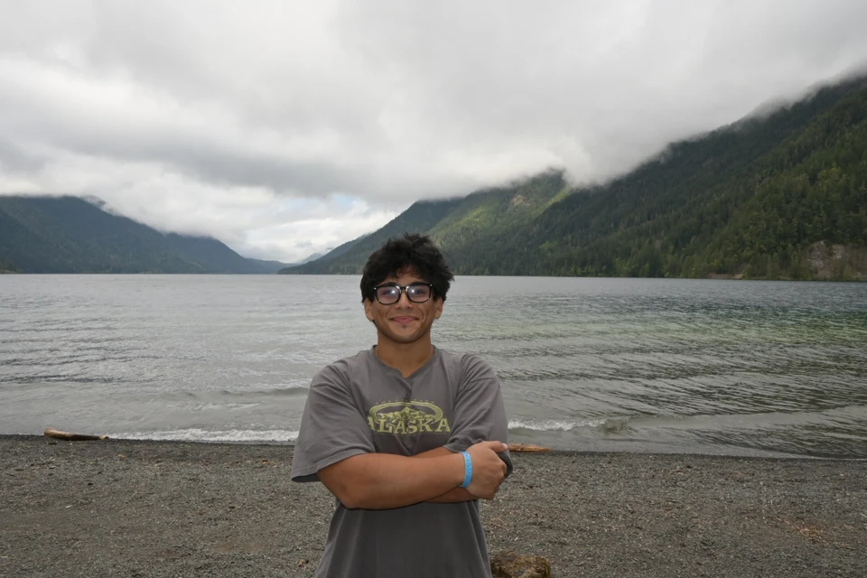

Photos from my travels
Washington
Lakes, forest trails, wildlife, and waterfalls around Port Angeles.
19 photographs · All photos

LakesideA lakeside moment near Port Angeles · Port Angeles area, Washington
 Lakeside
LakesideDriftwood along the lakeshore · Port Angeles area, Washington
 Lakeside
LakesideA quiet shoreline near Port Angeles · Port Angeles area, Washington
 Lakeside
LakesidePacked for a day outside · Port Angeles area, Washington
 Lakeside
LakesideTaking a break by the lake · Port Angeles area, Washington
 Lakeside
LakesideWalking beside the water · Port Angeles area, Washington
 On the trail
On the trailMossy trees and forest wildflowers · Port Angeles area, Washington
 Wildlife
WildlifeWildlife among the trees · Port Angeles area, Washington
 Wildlife
WildlifeA forest wildlife encounter · Port Angeles area, Washington
 Wildlife
WildlifeWildlife beneath moss-covered branches · Port Angeles area, Washington
 On the trail
On the trailA rocky creek through the forest · Port Angeles area, Washington
 On the trail
On the trailA sign along the forest trail · Port Angeles area, Washington
 Waterfalls
WaterfallsWaterfall in the forest · Port Angeles area, Washington
 Waterfalls
WaterfallsA moment beside the waterfall · Port Angeles area, Washington
 Waterfalls
WaterfallsA footbridge above rushing water · Port Angeles area, Washington
 Waterfalls
WaterfallsRushing water beneath the trees · Port Angeles area, Washington
 On the trail
On the trailA trail break beside the creek · Port Angeles area, Washington
 Lakeside
LakesideSnow beside a mountain lake · Port Angeles area, Washington
 On the trail
On the trailA snowy stretch of the trail · Port Angeles area, Washington
Another place to explore
19 photographsWashington
Lakes, forest trails, wildlife, and waterfalls around Port Angeles.
Explore Washington → 14 photographs
14 photographsAlaska
Mountain views, train rides, wildlife, and trails from my travels in Alaska.
Explore Alaska → 2 photographs
2 photographsBritish Columbia
Quiet corners and colorful gardens in Victoria.
Explore British Columbia →